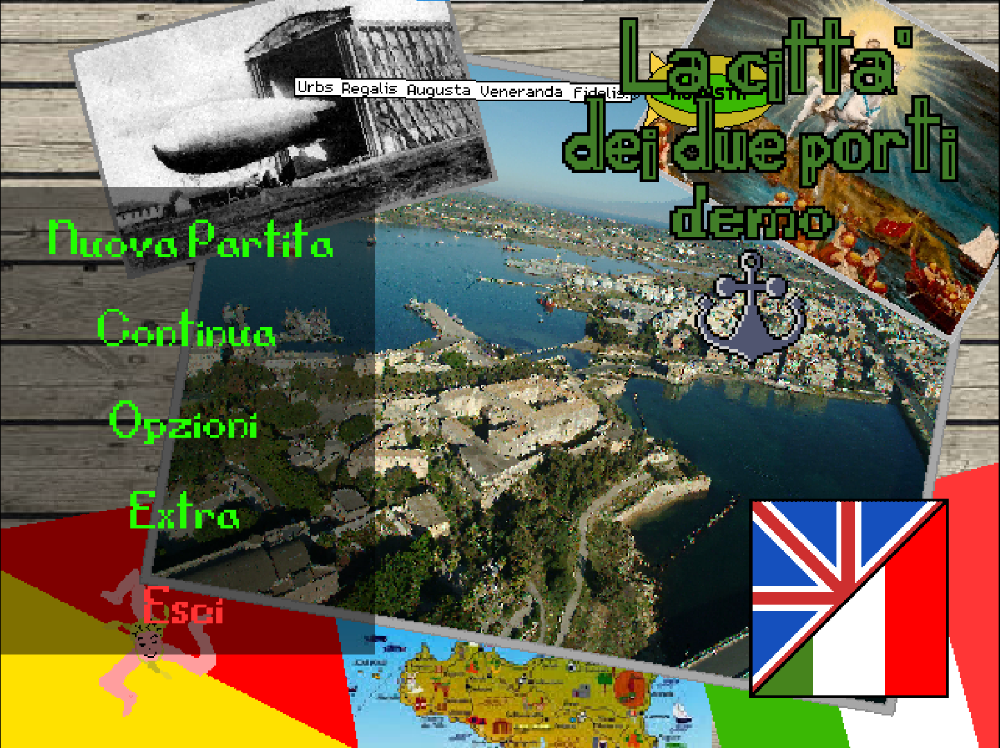
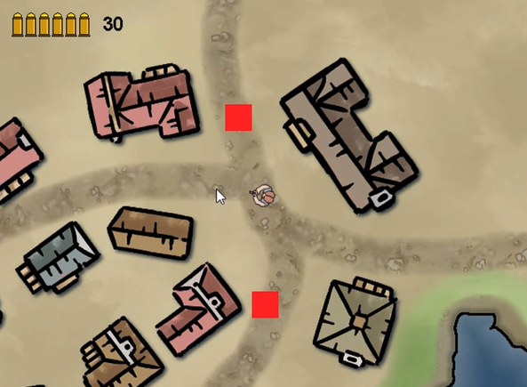

Benvenuti sul sito ufficiale di GreenEyes Studios!
Chi siamo?
Siamo 2 studenti d'informatica con l'obbiettivo di lavorare nell'industria videoludica.
Per cominciare, abbiamo deciso di aprire questo studio dal nome "GreenEyes" per sviluppare
i nostri primi progetti.
Che progetti abbiamo realizzato?
Parte del team ha già sviluppato alcuni giochi di cui sono state pubblicate le versioni
beta o i video trailer, di cui sono:
1) La città dei due porti: Un gioco in stile super mario ambientato ad Augusta, di cui
il protagonista è il sindaco eletto nel 2020 di nome "Giuseppe Di Mare".

Visita il sito del gioco!
2) Jerma Adventure (GIOCO MEME): Un gioco dedicato allo streamer americano "Jerma", dove
il protagonista (Jerma) deve sconfiggere i suoi cloni zombie che hanno invaso Las Jermas

Ecco un video della beta!